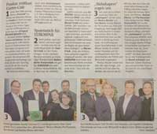

This year I had the chance to join the Diversity Ball. It is quite a big event. The biggest one is the "Life Ball" and this one is the second biggest. This year, you could wear your traditional clothes and get in cheaper and that was great, because I love my Dirndl and I don't really have the chance to wear it. And the event theme was interesting too, so I was really glad I could join this event. I saw a lot of different people in all kinds and forms - this is the diversity in us, but we are all humans - that's the equality in us. And this event embraces these things and I think it is a good thing and I hope I am able to join it again next year with some friends.
ことし、ダイバーシティ舞踏会を参加することができました。かなり大イベントです。一番大きいのは「ライブボール」で、これは2番目の大きいイベントです。今年、自国の伝統的な衣装が着れるので、すごく楽しみにしていました。持っているディアンドルすごく大好きで、着れるチャンスは結構少ないので、もっと楽しみにしていました。それで、このイベントの名前はとても面白くて、参加できるのはとてもよかったです。人はいろいろな形で見ました ⇒ 私たちのダイバーシティですが、みんなは人間です ⇒ 私たちの同一です。このボールはそういうことを大事にして、とても良いことだと思います。できれば、来年、友達と改めて参加したいです。
I made a new video a few days ago about the April Weather here in Austria. It's a quite changing weather, so take care that you have everything, when you come to Austria at this season. :)
新しいビデオをアップしました。今回、4月の天気についてお話をします。4月にオーストリアでかなり特別な天気があります。毎日天気が変わる可能性が非常に高くて、結構気を付けないといけません。自分の住んでいるところに似ている天気はありますか？もし、4月にオーストリアに訪問する予定があれば、気を付けてください。
The company I'm working for moved into a bigger place and we made a welcome party and invited a lot of people from our city and many clients. The mayor of our city and a journalist from our local newspaper came too. They party was really filled up with people and I was behind the bar and gave the everybody their drinks. It was quite a lot of fun, because when I was a student I worked in a restaurant and it was quite a lot of fun then. I remembered how much fun I had when giving out drinks. The journalist mentioned our company in a small article and 2 photos. In one of the photos you can see me too. :)
弊社がつい最近新しい場所に引っ越しをしました。この前、完成式を開催して、いろいろなクライエントとほかの人を誘いました。市町村長やジャーナリストもいらっしゃいました。パーティーはかなり良かったですね。たくさん人が来て、私はバーで人に飲み物を作りました。学生の時にもレストランで飲み物を作って、たくさんよい思い出を作って、今改めてバーのほうに立つのはとても楽しかったです。ジャーナリストは小さい記事に弊社について書いて、私が入っている写真も載せられました。
In a few weeks we have easter season again.
This time I made a different video about easter decorations. Last year I made a video how we color eggs these days and 2 years ago about coloring eggs longer ago. This year I colored them with pens and put them on a catkins. I am not the best at drawing, but I was able to make some cute eggs. I plan to put up some photos of easter bushes outside. Take a look at them when the photos are uploaded. ;)
後数週間にまたイースターシーズンが始まります。
今回のビデオに改めてイースター飾りについてです。去年に一般的に卵に色を付ける方法を見せて、2年前に自然な方法に卵染める方法を見せました。今年はペンで卵に色をつけて、猫柳に飾りました。あっちこっちに結構かわいい卵出来上がったと思いますね。それで、外に見かけるイースター飾りの植物の写真をインスタグラムにアップするよ手なので、是非ご覧くださいo(*^▽^*)o~♪
In February I started a new job, so I got quite busy lately and get used to my new job. It is a job as a web frontend developer and I really like creating websites from the beginning and seeing every piece get into its place. It is not easy, but I really like it.
２月に新しい仕事を始めました。だから、最近は結構忙しくなって、新職も慣れ始めました。新しい仕事はウェブフロントエンドデヴェロッパーです。ウェブデザイナーの仕事は本当に好きです。ウェブサイトを最初のステップから完成まで見るのが好きです。簡単ではないですが、本当に楽しいです。
A new year has started! I hope you had a really good new Year's Eve. I attended a party at a friends house. This time we were at a new location in St. Pölten. We had a really nice evening, playing some computer games and dining very delicious. Starting at midnight like every year the fireworks started everywhere and it was awesome to watch, like every year!! How did you spend your New Year's Eve? I really like to spend it with my family and friends.
I wish you a wonderful new year and keep on purchasing your dreams!!

新年が始まりました。みんなは良い御年越しを過ごしましたか?私は友達の家でパーティーを参加しました。今回は新しい場所に美味しい晩御飯を食べて、楽しいゲームも皆でやりました。いつも通り零時にどこでもデカイ花火が上りました。毎回、毎回とても凄い眺めになります。花火は本当に心から好きですね。みんなさんは今年の御年越しをいかがに過ごしましたか？私は家族と友達と過ごすのが一番すきですね。
みんなさんは素敵な一年になりますように～それで、夢を向かってください！
{kind=link}